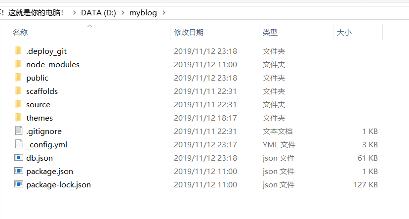

Hexo + Github制作自己的博客网站
第一步 前提准备
第二步 Github准备
创建仓库
新建仓库的时候一定要创建你的用户名.github.io格式的仓库，必须是自己的用户名否则无效。以后访问地址就是https://你的用户名.github.io。之后所有的代码都是放在这个仓库里了。
配置SSH key
这是为了更为安全地解决本地和服务器的连接。
先设置Git的用户名和邮箱
1 | git config --global user.name "Garyyhy" |
检查是否存在ssh key
1 | cd ~/.ssh |
如果没有那就生成一个
1 | ssh-keygen -t rsa -C "641071514@qq.com" |
生成之后有两种方法取得ssh key
- 打开id_rsa.pub文件拷贝里面的内容
- 使用代码直接在cmd中拷贝显示
cat id_rsa.pub
添加成功后可以使用以下代码进行测试是否成功
1 | ssh -T git@github.com |
第三步 Hexo准备
初始化Hexo
在你的电脑里你喜欢的地方新建一个文件夹，在这个文件夹中进入cmd（可以在地址栏里输入cmd回车进入）输入以下代码，Hexo会自动下载所需要的必要文件到这个文件夹中。
1 | hexo init |

完成之后就可以启动Hexo了
1 | hexo g #生成hexo |
启动之后就可以打开浏览器访问localhost:4000（这是默认端口）
第四步 上传到Github
配置文件
在hexo根目录下，有一个_config.yml的配置文件，接下来我们要在这个文件中找到deploy部分然后配置一下信息
1 | deploy: |
PS.这里有一个很重要的点，type、repo、branch的前面要加上一个tab，冒号后面需要一个空格
安装插件
在git bash上使用以下命令
1 | npm install hexo-deployer-git |
上传文件
在cmd或者git bash上都可以使用改命令上传文件（必须是在hexo目录下)
1 | hexo d |
这会是有改动的文件传入Github
第五步 写博客
在hexo的根目录下使用cmd执行以下命令
1 | hexo new 'name' |
hexo就会在_posts文件夹里给我们生成md文件，name就是该md文件的名字。这个md文件里有默认生成的一些内容比如标题、生成时间、文章标签等。